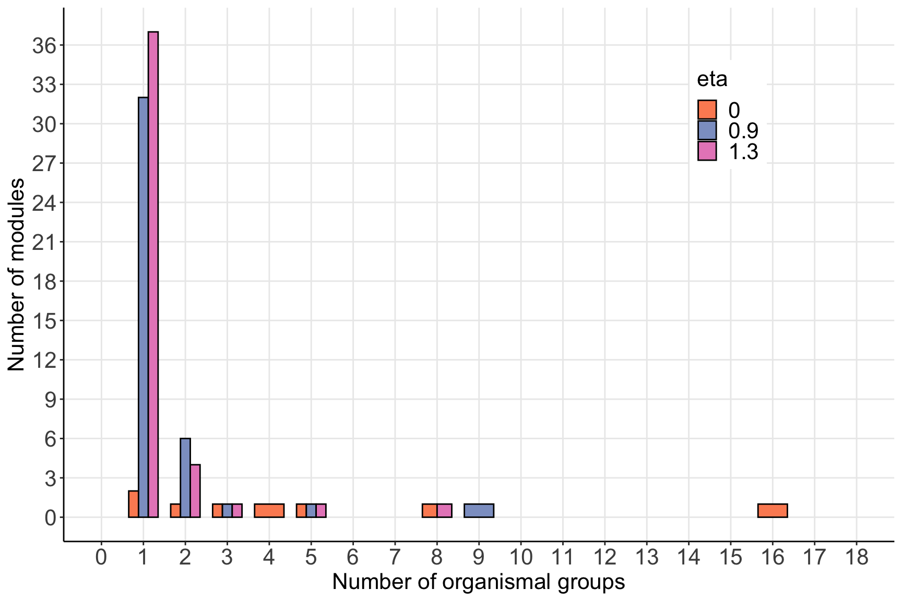

A binary directed food web from Mouritsen KN, Poulin R, McLaughlin JP, Thieltges DW. Food web including metazoan parasites for an intertidal ecosystem in New Zealand: Ecological Archives E092-173. Ecology. 2011;92: 2006–2006.
In infomapecology:
data(otago_nodes)
data(otago_links)
node_id attribute_id
1 1
2 1
3 1
4 2
5 3In this example, the attribute IDs are (example with first four):
| OrganismalGroup | attribute_id |
|---|---|
| Plant | 1 |
| Zooplankton | 2 |
| Meiofauna | 3 |
| Bacteria | 4 |
For now, Infomap can only handle categorical attributes, and only a single attribute type.
The code here depends on previous analysis of the Otago network with hierarchical structure, which should be run first.
# Prepare data for hierarchical structure analysis -------------------------------
otago_nodes_2 <- otago_nodes %>%
filter(StageID==1) %>%
select(node_name=WorkingName, node_id_original=NodeID, WorkingName,StageID, everything())
otago_links_2 <- otago_links %>%
filter(LinkType=='Predation') %>% # Only include predation links
filter(ConsumerSpecies.StageID==1) %>%
filter(ResourceSpecies.StageID==1) %>%
select(from=ResourceNodeID, to=ConsumerNodeID) %>%
left_join(otago_nodes_2, by=c('from'='node_id_original')) %>%
select(from, node_name, to) %>%
left_join(otago_nodes_2, by=c('to'='node_id_original')) %>%
select(from=node_name.x, to=node_name.y) %>%
mutate(weight=1)
# Prepare network objects
# Some species will have only incoming or outgoing links, so the next line will result in a warning
network_object <- create_monolayer_network(x=otago_links_2, directed = T, bipartite = F, node_metadata = otago_nodes_2)## [1] "Input: an unipartite edge list"## Warning: One or more rows sum to 0. This may be ok if you expect some links with only outgoing links (e.g., basal species in a food web)## Warning: One or more columns sum to 0. This may be ok if you expect some links with only incoming links (e.g., top predators in a food web)## Joining with `by = join_by(node_name)`# Prepare data for analysis with node attributes ---------------------------------
# Create an attribute -- attribute ID map
node_attribute_map <- otago_nodes_2 %>% distinct(OrganismalGroup) %>%
mutate(attribute_id=1:n())
# Create a file with node attributes
node_attributes <-
network_object$nodes %>%
distinct(node_id, OrganismalGroup) %>%
left_join(node_attribute_map) %>%
select(-OrganismalGroup) %>%
write_delim('otago_node_attributes.txt', delim = ' ', col_names = F)## Joining with `by = join_by(OrganismalGroup)`# Run without metadata
infomap_object <- run_infomap_monolayer(network_object, infomap_executable='Infomap',
flow_model = 'directed',
silent=T,trials=5, two_level=T, seed=200952)## [1] "Creating a link list..."
## running: ./Infomap infomap.txt . --tree --seed 200952 -N 5 -f directed --silent --two-level
## [1] "Removing auxilary files..."# Run with metadata and eta=0.7
infomap_object_metadata_09 <- run_infomap_monolayer(network_object, infomap_executable='Infomap',
flow_model = 'directed',
silent=T,trials=5, two_level=T, seed=200952,
... = '--meta-data otago_node_attributes.txt --meta-data-rate 0.9')## [1] "Creating a link list..."
## running: ./Infomap infomap.txt . --tree --seed 200952 -N 5 -f directed --silent --two-level --meta-data otago_node_attributes.txt --meta-data-rate 0.9
## [1] "Removing auxilary files..."# Run with metadata and eta=1.3
infomap_object_metadata_13 <- run_infomap_monolayer(network_object, infomap_executable='Infomap',
flow_model = 'directed',
silent=T,trials=5, two_level=T, seed=200952,
... = '--meta-data otago_node_attributes.txt --meta-data-rate 1.3')## [1] "Creating a link list..."
## running: ./Infomap infomap.txt . --tree --seed 200952 -N 5 -f directed --silent --two-level --meta-data otago_node_attributes.txt --meta-data-rate 1.3
## [1] "Removing auxilary files..."# Compare the modules with and without metadata
eta0 <- infomap_object$modules %>%
group_by(module_level1) %>%
summarise(n=n_distinct(OrganismalGroup)) %>%
mutate(eta=0) %>%
arrange(desc(n), module_level1)
eta09 <- infomap_object_metadata_09$modules %>%
group_by(module_level1) %>%
summarise(n=n_distinct(OrganismalGroup)) %>%
mutate(eta=0.9) %>%
arrange(desc(n), module_level1)
eta13 <- infomap_object_metadata_13$modules %>%
group_by(module_level1) %>%
summarise(n=n_distinct(OrganismalGroup)) %>%
mutate(eta=1.3) %>%
arrange(desc(n), module_level1)
bind_rows(eta0, eta09, eta13) %>%
mutate(eta=factor(eta, levels=c('0','0.9','1.3'))) %>%
rename(num_OG=n, module_id=module_level1) %>%
group_by(num_OG, eta) %>%
summarise(num_modules=n()) %>%
ggplot(aes(x=num_OG, y=num_modules,fill=eta)) +
geom_col(position = 'dodge', color='black', width=0.7) +
scale_x_continuous(limits=c(0,18), breaks=0:18)+
scale_y_continuous(limits=c(0,37), breaks=seq(0,36,by=3))+
scale_fill_manual(values = c('#fc8d62','#8da0cb','#e78ac3'))+
labs(x='Number of organismal groups', y='Number of modules', fill='eta')+
theme_bw()+
theme(panel.grid.minor = element_blank(),
panel.border = element_blank(),
axis.line = element_line(color = 'black'),
legend.position = c(0.8,0.8),
legend.text = element_text(size=16),
legend.title = element_text(size=16),
legend.key.size = unit(1, 'line'),
axis.text = element_text(size=16),
text=element_text(size=16))## `summarise()` has grouped output by 'num_OG'. You can override using the `.groups` argument.
Under the hood, the function run_infomap_monolayer
runs:
./Infomap infomap.txt . -i link-list --tree --seed 200952 -N 20 -f directed --silent --two-level --meta-data otago_node_attributes.txt --meta-data-rate 0.7Explanation of key arguments: *
--meta-data otago_node_attributes.txt indicates the file
name (otago_node_attributes.txt) with the attribute value
for each node. * --meta-data-rate 0.9 indicates the value
of eta (here 0.9)
A tree
file is produced by Infomap, but is parsed by
run_infomap_monolayer from infomapecology (in R:
?run_infomap_monolayer). An analysis with metadata does not
have a special output. So in this example the output format is the same
as in Monolayer directed
network with hierarchical structure